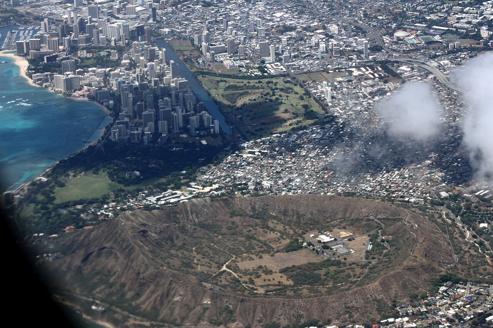

Honolulu in a Port Day: Waikiki, Diamond Head, and Pearl Harbor

Honolulu is a port day with a split personality: the ship docks in a working harbour, and twenty minutes away is one of the most famous beaches on earth. The day works if you decide in advance whether it is a beach day, a history day, or a hike — trying to do all three is how people end up back at the ship sunburned, late, and having seen none of them properly. Book the things that need booking before the ship docks, because in Honolulu the walk-up era is over.
Arriving: Pier 2 or Aloha Tower
Cruise ships dock at Pier 2 (521 Ala Moana Boulevard) or at the Aloha Tower piers (10–11) on the downtown waterfront. Either way, Waikiki is 3–4 miles away — too far to walk comfortably in the heat, close enough that every transport option is cheap. A taxi to Waikiki runs roughly $20–30; the city bus is $3.25 cash or $3 with a HOLO card, with a $7.50 day cap; rideshare is usually between the two. There is no ship-run shuttle to count on — plan your own ride out, and your own ride back.
Honolulu runs on Hawaii time, and the ship's clock may or may not match. Confirm the all-aboard time at the gangway, and remember that a port day here often runs 6 AM to 11 PM — a long day, which is exactly why it is tempting to over-plan it.
The morning: Diamond Head, booked in advance
The single best use of a Honolulu morning is the Diamond Head hike — and it is also the easiest to get wrong. The trail climbs the volcanic crater to a summit with a 360-degree view over Waikiki, the city, and the Pacific, and it takes about 1.5–2 hours round trip including the climb's 560-odd feet of elevation and the famous 99-step staircase near the top. Non-residents pay $5 per person, and — this is the part that catches people — an advance reservation is required, with no walk-ups. Book the entry slot before the cruise, for the morning, and bring the confirmation.
Get there early: the trail opens in the morning and the heat builds fast. The bus drops you near the crater entrance; from there it is a walk up to the trailhead. Bring water — there is none for sale on the trail — and wear proper shoes, not beach sandals: the path is steep, uneven, and crowded with people who made both mistakes.
Midday: Waikiki beach and lunch
After the hike, Waikiki is the reward. The beach itself is free and public, the water is warm, and the strip along Kalakaua Avenue has everything from a $5 plate lunch to a $50 sit-down meal. A plate lunch — two scoops of rice, macaroni salad, and chicken katsu or kalua pork — is the honest Honolulu lunch and runs roughly $12–18. Shave ice is the other local ritual: the fine, snow-like kind, not the crunchy mainland version, roughly $6–9 with toppings.
If the beach is not the point, the alternative midday is downtown: Iolani Palace, the only royal palace on American soil, and the Hawaii State Art Museum are both a short ride from the pier. Either way, keep midday slow — the sun is strongest then.
The afternoon: Pearl Harbor or the North Shore question
Pearl Harbor is the history option, and it needs the same advance planning as Diamond Head. The USS Arizona Memorial program is free, but the boat ride to the memorial requires a timed reservation with a $1 reservation fee, and the popular morning slots go first — book it before the cruise, or expect a standby line that may not clear. The whole visit, including the museums, takes 3–4 hours; pair it with Waikiki and skip Diamond Head, or the day collapses.
The other afternoon option is a rental car to the North Shore — Haleiwa, Waimea Bay, the shrimp trucks. It is a great drive, but it is a full afternoon with Honolulu traffic both ways, and the rental pickup near the port is the bottleneck: the cheapest cars are at the airport, a shuttle or taxi away. Only do it if the ship's departure is late and the car is already reserved; a walk-up rental on a port day is a gamble.
Getting around
TheBus is the honest workhorse: $3.25 cash, $3 with a HOLO card, $7.50 day cap, and routes that cover Waikiki, Diamond Head, Pearl Harbor, and downtown. The Waikiki Trolley is the tourist option — hop-on, hop-off, pricier, and slower. Taxis to Waikiki run roughly $20–30; rideshare is similar and easier to summon. Biki, the city's bike-share, is the best way to move along the Waikiki strip itself: flat, short rides, and faster than a car in beach traffic.
What a port day costs (approximate, per person)
- TheBus day cap: $7.50
- Diamond Head entry (non-resident, reserved): $5
- USS Arizona Memorial program: free + $1 reservation fee
- Plate lunch: roughly $12–18
- Shave ice: roughly $6–9
- Taxi to Waikiki (per car, not per person): roughly $20–30
- Comfortable total without a rental car: roughly $35–60
Tips for cruisers
- Reserve Diamond Head and Pearl Harbor before the cruise. Both are reservation-only now, and neither takes walk-ups. No reservation, no entry — that is the whole story.
- Pick two things, not four. Diamond Head + Waikiki, or Pearl Harbor + Waikiki, is a full day. Adding the North Shore to either is how the day falls apart.
- Water, hat, sunscreen — in that order. The hike has no shade and no water for sale; Waikiki sun is stronger than it feels in the trade winds.
- Keep the return simple. TheBus back to the pier is cheap and reliable, but allow extra time in the afternoon — Waikiki traffic is slow, and the ship will not wait for the bus.
Prices and hours are approximate and were checked in November 2026; fares, entry fees, and reservation rules change. Confirm on the day if a price decides the plan — and confirm the reservation before the ship docks, not after.